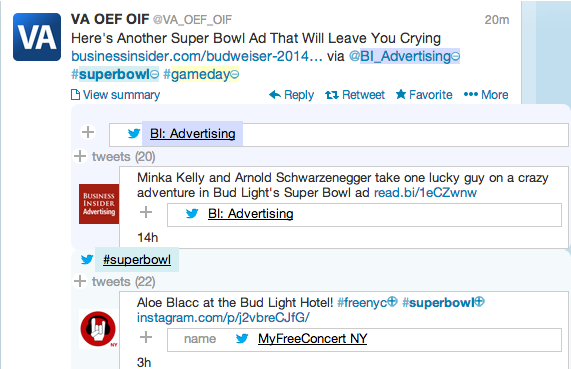

TweetBubble is a free and open source Chrome extension that helps Twitter users explore social media connections.
The Twitter interface is subtly transformed.
TweetBubble enables Twitter users to expand any @tweeter or #hashtag to see more tweets, without switching back and forth across tabs and windows.
This helps you put together the big picture of who is connecting with whom, while diving into an ocean of information.
It also helps you keep on track, following conversations even across Twitter feeds.
TweetBubble has the potential to make Twitter more effective and engaging for occasional and expert Twitter users, right away, right now.
TweetBubble is a free and open source Chrome extension that helps Twitter users explore social media connections.
The Twitter interface is subtly transformed.
TweetBubble enables Twitter users to expand any @tweeter or #hashtag to see more tweets, without switching back and forth across tabs and windows.
This helps you put together the big picture of who is connecting with whom, while diving into an ocean of information.
It also helps you keep on track, following conversations even across Twitter feeds.
TweetBubble has the potential to make Twitter more effective and engaging for occasional and expert Twitter users, right away, right now.
Install TweetBubble in the Chrome Store!
TweetBubble is a project of graduate students Ajit Jain, Nic Lupfer, Yin Qu, and Rhema Linder, and their advisor, Andruid Kerne. Twitter is a powerful medium, in which people develop social networks of content and expression using #hashtags, @tweeter handles, embedded images, and links. Through its free and public release as a Chrome extension, the TweetBubble interface investigates how people discover connections through social media.
We use Metadata In-Context Expander from the free and open source BigSemantics framework to visualize metadata, and Meta-Metadata language to specify the data models, extraction rules and presentation semantics. The presentation semantics define rendering guidelines, creating visual consistency with Twitter and reducing redundancy.
 Check out the open source TweetBubble code on BigSemanticsJavascript repository on GitHub.